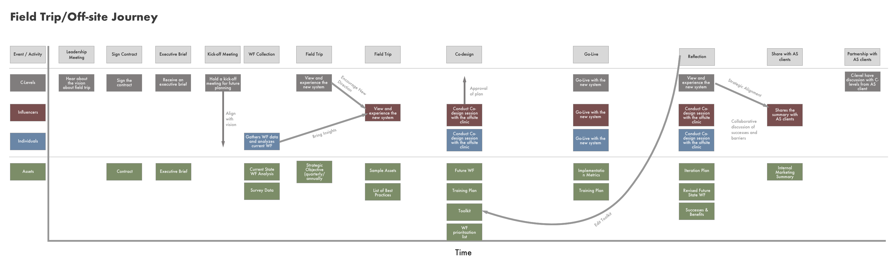

Design Phase
Though the greater end goal is to reduce physician burnout, we set out our design phase with guiding principles and goals:
- Develop a system that Allscripts could leverage beside their software to create an exceptional EMR user experience
- Create workflow standards to remove the subjectivity and ambiguity that leads to friction and confusion across an organization
- Surface workflow standards to facilitate decision making and critique among physicians, implementation consultants, and IT staff
- Help manage future technical and design debt
This phase consisted of a series of design sprints coupled with user testing.
Strategy
Design sprints were our main method for researching, ideating, building, and validating in a handful of days. We conducted four sprints to get a variety of ideas and concepts. To help us frame our design objectives for design sprints, we collectively decided on two questions.
- How might we empower the Allscripts implementation team to iterate and deliver workflows quickly?
- How might we better involve physicians in the implementation process to align with their needs?
User testing enabled us to collect qualitative reactions and quantifiable evidence so that we can appropriately measure the value concepts and any prototypes created. We've tested with 15 users, including ICs, physicians, nurses, medical directors, and IT directors.
Sprints
Our team used the GV sprint framework to come up with ideas during the design phase.
Having identified areas of exploration from our research phase, we had general design directions we could pursue. GV’s sprint structure enabled us to rapidly dive into specific design opportunities. Two questions we asked ourselves before each sprint were:
- Do we need to run a sprint?
- How will the outcome bring us closer to a better solution?
Sprint 1
How might we enable implementation consultants to effectively communicate their proposed workflow to end users?
We started by mapping out how we currently understood the workflow design process. Then, we separately sketched paper solutions to the sprint. After presenting each one, we voted on the features we felt would have the highest impact and created paper prototypes.


Learning from user testing
When we tested the prototype, we learned that representing workflows as a flowchart was a common practice. However, due to the complexity of these diagrams, clinicians don’t use them. Instead, it is used by implementation consultants, solutions architects or IT. When iterating on our prototype, we focused more on representing relevant EMR screens to clinicians.
Additionally, we realized that our current prototype concept included mundane features that only distracted from the primary purpose of the test. When creating prototypes in the future, we decided to omit obvious features that would be included in higher-fidelity prototypes.
How does this solve the problem?
Our solution idea enables implementation consultants to share their notion of a workflow with a physician along with relevant EMR screens to get feedback. This feedback can be used to make configuration changes to existing Sunrise clinical workflows.
Sprint 2
How might we improve the workflow collection process without using any new technology?
For this sprint, we decided to focus on concepts that don't require any new technology to be used, based on the idea that consultants already have enough digital artifacts to work with. We sought advice from high-reliability organizations and attempted to incorporate their best practices into a service model.
We came up with updated implementation service model for Allscripts to share with their clients. Our vision is that new clients or existing clients seeking to optimize would follow this set of steps.
How does this solve the problem?
Our solution idea focuses on the friction that occurs that hinder EMR implementation and use within healthcare organizations. By focusing on the best practices of high-reliability organizations, we uncovered an untapped resource for Allscripts to share with clients.
Sprint 3
How might we gather actionable feedback on workflows from clinicians?
We looked at tools in unrelated domains that facilitated the collection and analysis of feedback from end users. Currently, feedback is collected during implementation via tedious, 3-4 hour long meetings, and is recorded as line-items in Excel sheets. Our goal was to come up with a better, more invigorating way to ask for feedback from clinicians without requiring more of their time.
How does this solve the problem?
This prototype allows for asynchronous testing and makes sense of the feedback given for the implementation consultant. It improves feedback coverage within an organization and helps consultants make better sense of the progress within workflow design.
User Testing DeckArriving at our final prototypes
After our last round of user testing, we conceptualized a prototype composed of a platform for consultants to create mockups for physicians to react to, and a feedback platform to gauge the responses from care providers. The key, in our minds, was for a narrative scenario to accompany the visual aid in mockup creation, and for the feedback platform to ask the right questions of providers.
Decisions and Takeaways
After presenting our latest design concepts at our spring design presentation, we decided...